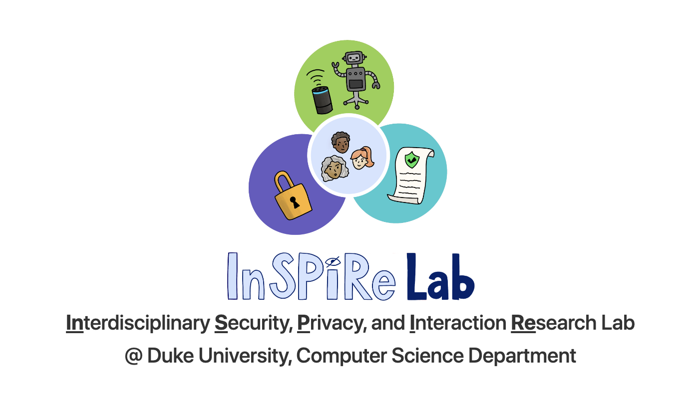

Research
Google Scholar
Summer Institute in Biomedical Informatics (SIBMI)
Summer 2023 I worked in CELEHS Lab with Dr. Tianxi Cai and Dr. Junwei Lu.
Research Presentation
A video I made regarding Medical Domain Contrastive Learning can be seen below
InSPIre Lab

For more information, visit the Lab Website.